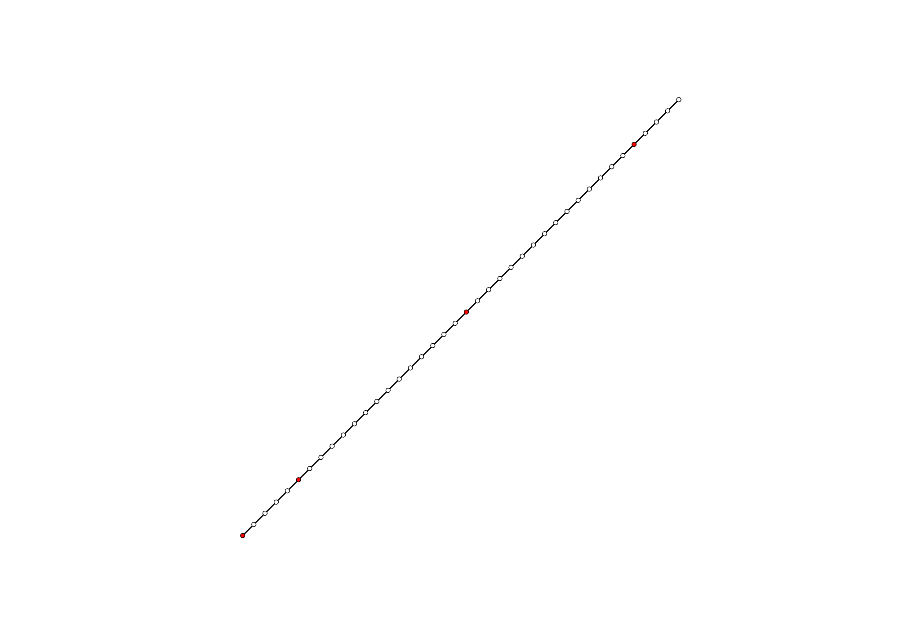

Spline relaxation

from compas.datastructures import Network
from compas_plotters import NetworkPlotter
from compas.numerical import drx_numpy
from numpy import linspace
# Setup
L0 = 1.0
L = 1.5
n = 40
EI = 0.2
pins = [0, 5, 20, n - 5]
# Network
vertices = [[i, i, 0] for i in list(linspace(0, L0, n))]
edges = [[i, i + 1] for i in range(n - 1)]
network = Network.from_vertices_and_edges(vertices=vertices, edges=edges)
network.update_default_vertex_attributes({'is_fixed': False, 'P': [1, -2, 0], 'EIx': EI, 'EIy': EI})
network.update_default_edge_attributes({'E': 50, 'A': 1, 'l0': L / n})
network.set_vertices_attributes(['B', 'is_fixed'], [[0, 0, 0], True], keys=pins)
network.attributes['beams'] = {'beam': {'nodes': list(range(n))}}
# Plotter
plotter = NetworkPlotter(network, figsize=(10, 7))
# Initial configuration
lines = []
for u, v in network.edges():
lines.append({
'start': network.vertex_coordinates(u, 'xy'),
'end': network.vertex_coordinates(v, 'xy'),
'color': '#cccccc',
'width': 1.0})
plotter.draw_lines(lines)
plotter.draw_vertices(radius=0.005, facecolor={key: '#ff0000' for key in pins})
plotter.draw_edges()
plotter.update()
# Callback for dynamic visualization
def plot_iterations(X, radius=0.005):
for i in network.vertices():
x, y, z = X[i, :]
network.set_vertex_attributes(i, 'xyz', [x, y, z])
plotter.update_vertices(radius)
plotter.update_edges()
plotter.update(pause=0.01)
# Solver with dynamic visualization
drx_numpy(structure=network,
tol=0.01,
refresh=10,
factor=30,
update=True,
callback=plot_iterations)
# Keep the plot alive
plotter.show()